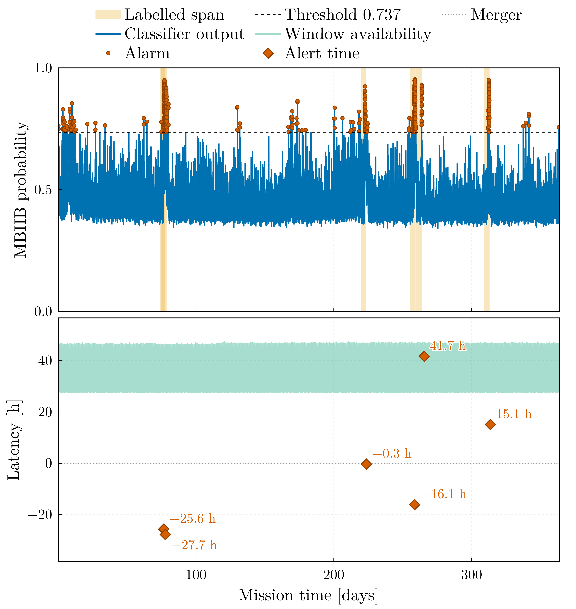
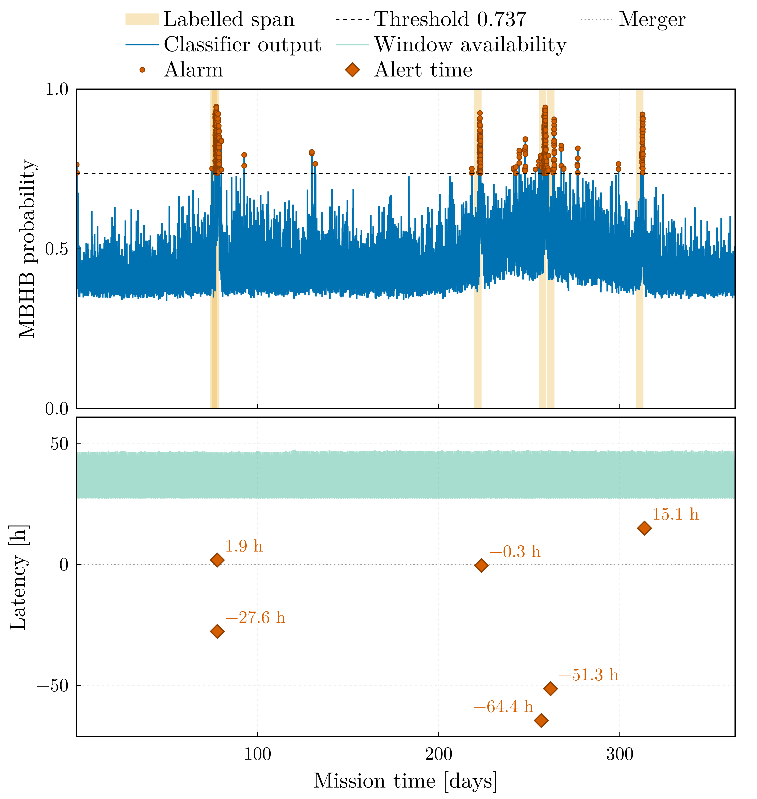
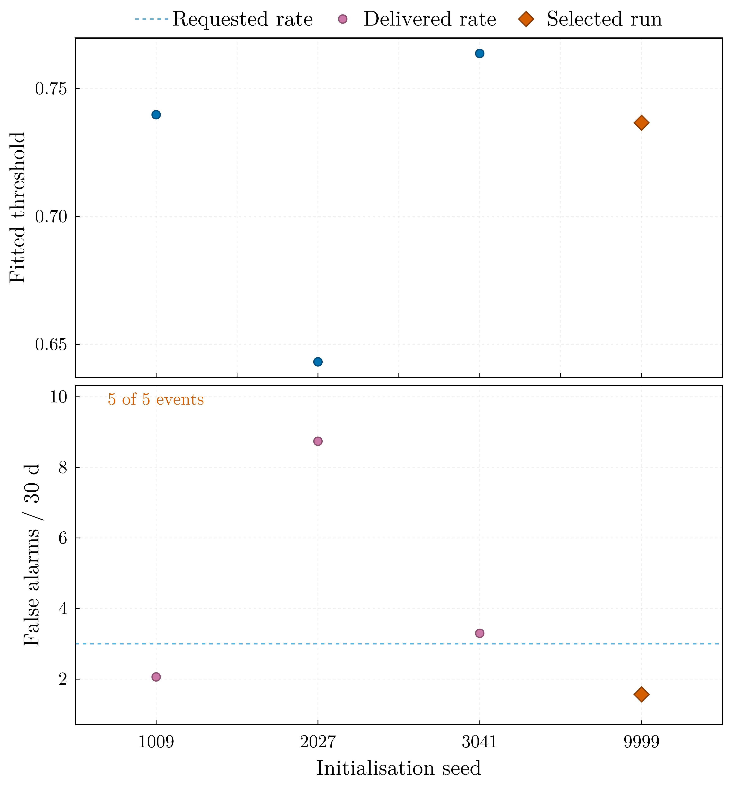
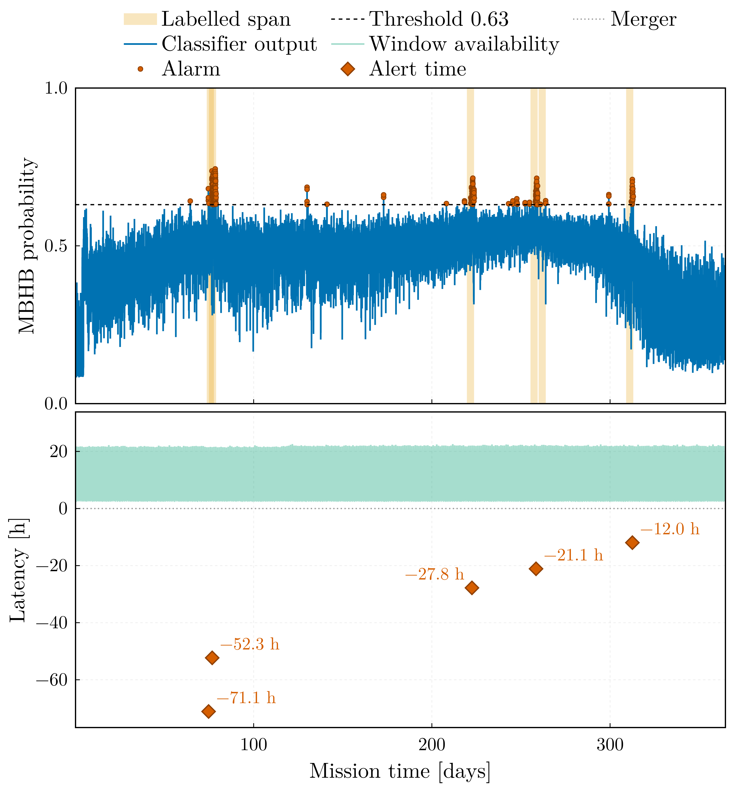

Sangria benchmark
This page reports the results of the classifier on the LISA Data Challenge 2a "Sangria" data set: one year of simulated LISA telemetry for training and a second, blind year for evaluation.
The principal result is that on the blind year the eight-qubit model detects all five labelled MBHB events at 1.57 false-alarm episodes per 30 mission days (19 episodes over 364 days), from a decision threshold fitted on held-out data of the training year and applied without adjustment. The rate predicted at the fitted threshold was 1.38, so the operating point transfers. The model was chosen on the validation block of the training year before the blind year was scored; it has the same configuration and seed as the model selected for the 1.0.0 tag, retrained on the half-period encoding.
The configuration was selected by a pre-registered statistic on the training year, so the value 1.57 involves no selection on the blind year; but the spread under re-initialisation alone, measured below, ranges from 1.57 to 8.74, and every other configuration of the grid falls inside that spread, so the ranking between configurations is not resolved. Every run on this page encodes its features on the half period $[0, \pi]$ of the $R_z$ gate; the merger windows of the high-SNR coalescences, which the full-period encoding mapped onto the noise floor, now score above the threshold for four of the six, but still not for the two most saturated (see the encoding paragraph of the protocol). Finally, the blind year is whitened by its full-record PSD, a label-free statistic of the record under evaluation: the median Welch estimate of the entire blind year, which is available only after the whole record has been received. This is admissible for a completed record and non-causal for a streamed one; the telemetry replay below is therefore quoted under causal whitening, in which the PSD is estimated only from data already delivered to the ground station, and the replay whitened by the full-record PSD is reported beside it as an upper reference for the causal replay.
Data and labels
LDC2a Sangria provides two one-year records of TDI $X$, $Y$, $Z$ at 0.2 Hz: a training product with its source catalogue and truth streams, and a blind product whose MBHB catalogue is released separately. Both are read natively (read_tdi, read_catalog) and reduced to the noise-orthogonal A channel, $A = (Z - X)/\sqrt{2}$ (tdi_to_aet).
Labels come from the truth stream rather than from the classifier's own notion of a detection (label_truth_stream). A merger is a peak of the windowed matched-filter SNR against the analytic Sangria TDI PSD, separated from its neighbours by at least a day and reaching SNR 8; a window is labelled positive when it overlaps the fixed span of four days before to 27 minutes after a coalescence. The training year carries 13 such events and the blind year 6 coalescences that merge into 5 labelled runs, two of them falling within a day of each other.
The first and last ten window lengths of each record are dropped (edge_margin), because the circular high-pass and whitening filters ring there; 62,863 windows of 1000 samples at a stride of 100 remain, covering 363.8 days.
Features are the mean whitened power in six bands whose edges rise from 0.3 mHz, together with the spectral entropy and the log power spread — eight numbers, one per qubit (feature_set = "bands"). The whitening PSD is a Welch estimate of the record being processed.
Protocol
The interpretation of the results depends on the evaluation protocol, which is therefore stated in full.
Blocks. Windows overlap by 90 %, so any random split would place copies of the same signal in both partitions. The training year is cut chronologically into training (70 %), validation (15 %) and test (15 %) blocks separated by one window length (chronological_split). The feature scaler is fitted on the training block alone, early stopping runs on the validation block, and the decision threshold is fitted on validation and test pooled — the held-out block, 110 days (threshold_block = "held_out", the opt-in the Sangria configurations declare; the package default is the validation block). The blind year enters twice: label-free, through the Welch estimate that whitens it, and at evaluation, where every model is scored once.
Threshold. The far criterion places the operating point of an alert trigger: among the candidates whose false-alarm episode rate does not exceed target_far_per_30d (3 per 30 days) and whose alarm duty cycle does not exceed target_fpr (5 %), it takes the lowest of the admissible range that starts at the highest threshold. The scan runs downwards because the episode count is not monotone: as the threshold falls, spurious episodes first increase in number and then merge into one continuously raised alarm that is counted as a few long episodes, which an upward scan would accept.
Rationale for the pooled block. The fitted rate rests on a Poisson count of the alarm episodes in its block, so its relative error is the inverse square root of that count. Across the grid below, four to ten episodes are counted on a 55-day validation block, which is insufficient to determine a rate. Pooling validation with test doubles the exposure. Pooling does not leak information into the model — the test block is scored once after training and enters neither model selection nor early stopping — but it removes the independence of the test block: its operating-point metrics are then in-sample, and the only independent check of the operating point is the blind year. For this reason the package default is the validation block alone (threshold_block = "validation") and the pooled block is an opt-in for records that come with a separate blind product, as this one does.
Selection. The selected configuration and seed were determined on the training year by a rule fixed before any blind score existed: the false-alarm episode count at the fitted threshold on the validation block, with every event of the block recovered as a constraint; counts within one Poisson standard deviation of each other are ties, broken by the validation ROC area and then by the smaller circuit. The blind year is then scored once per model and every model is reported, whatever its blind rank.
Metrics. An event is a contiguous run of positive labels and counts as detected when any window inside it alarms. A false-alarm episode is a contiguous run of alarmed windows outside every labelled span, and the operational rate is episodes per 30 mission days. Window-level precision, recall and ROC area are reported too, but the event-level pair defines the operating point.
Encoding. Every run on this page maps its features onto $[0, \pi]$ before the $R_z$ encoding gate ([training] phase_span = 1.0). The 1.0.0 tag used the full period $[0, 2\pi]$: $R_z(2\pi) = -I$ is a global phase, so a feature clamped at the upper scaler bound was encoded exactly as one at the lower bound, and by continuity the response returned to its floor value as a feature approached the bound. At the coalescence itself the band powers exceed the scaler bound by two to three orders of magnitude, and under the full period five of the six blind coalescences scored below the threshold in the six-hour bin holding the merger. Measured with the retrained model, from the persisted model and feature table, in that same bin:
| Event | Merger-window SNR | Features at the upper bound (mean per window) | Peak band power / scaler upper bound | Peak score, $[0, 2\pi]$ model (threshold 0.826) | Peak score, $[0, \pi]$ model (threshold 0.737) |
|---|---|---|---|---|---|
| 1 | 598 | 1.1 | 129 | 0.738 | 0.852 |
| 2 | 690 | 1.1 | 106 | 0.708 | 0.795 |
| 3 | 1312 | 2.7 | 788 | 0.682 | 0.703 |
| 4 | 799 | 1.2 | 158 | 0.764 | 0.849 |
| 5 | 272 | 0.9 | 109 | 0.861 | 0.913 |
| 6 | 723 | 1.2 | 193 | 0.585 | 0.730 |
The half period raises the score in the merger bin above the threshold for four of the six coalescences. The two that remain below are the two most saturated: event 3, the coalescence with the highest SNR, has on average 2.7 of its six band powers clamped at the bound in that bin, and event 6 has 1.2. A clamped feature is now a state distinct from the floor, but every clamped feature is the same state whatever its magnitude, and a window with several bands clamped simultaneously is a pattern of which the training year contains few examples. The scores still peak 12 to 30 hours before the merger (0.91 to 0.95 for every event), where the band powers lie at 0.4 to 0.8 of the bound: the classifier remains a detector of intermediate sub-mHz excess, with a merger response that is now mostly, but not entirely, above the threshold.
Results
Ten runs were trained on the same training year with the same protocol and evaluated once on the blind year, with the threshold carried over unchanged. The validation column is the selection statistic; the blind columns were computed after the selection was recorded.
| Run | Qubits × layers, features | Epochs | Threshold | Validation episodes | Blind events | Blind FA / 30 d | Blind AUC |
|---|---|---|---|---|---|---|---|
sangria_pi | 4 × 4, 2 bands | 37 | 0.816 | 9 | 5 / 5 | 2.64 | 0.8101 |
q4_l6_pi | 4 × 6, 2 bands | 37 | 0.844 | 10 | 4 / 5 | 1.98 | 0.8139 |
q6_b4_pi | 6 × 4, 4 bands | 24 | 0.765 | 8 | 5 / 5 | 5.53 | 0.7919 |
q6_b4_noweight_pi | 6 × 4, 4 bands, unweighted loss | 50 | 0.426 | 7 | 5 / 5 | 9.81 | 0.8115 |
q6_b4_w2000_pi | 6 × 4, 4 bands, 2000-sample windows | 36 | 0.618 | 10 | 5 / 5 | 26.39 | 0.8071 |
q8_b6_pi | 8 × 4, 6 bands | 30 | 0.737 | 4 | 5 / 5 | 1.57 | 0.8065 |
q8_b6_pi_s1009 | 8 × 4, 6 bands, seed 1009 | 20 | 0.740 | 10 | 5 / 5 | 2.06 | 0.8110 |
q8_b6_pi_s2027 | 8 × 4, 6 bands, seed 2027 | 36 | 0.643 | 10 | 5 / 5 | 8.74 | 0.8274 |
q8_b6_pi_s3041 | 8 × 4, 6 bands, seed 3041 | 29 | 0.764 | 7 | 5 / 5 | 3.30 | 0.8129 |
q8_b6_l6_pi | 8 × 6, 6 bands | 50 | 0.716 | 9 | 5 / 5 | 4.78 | 0.8268 |
Every run but one recovers all five label spans; under the full-period encoding the two-band four-qubit baseline recovered three of them, and it now recovers five at 2.64 per 30 days. Four runs meet the three-per-30-days target on the blind year: q8_b6_pi, its seed 1009, sangria_pi, and q4_l6_pi, which misses an event. The selection rule chose q8_b6_pi with four validation episodes against seven for the second-ranked run, a difference of three, outside the tie band of two; it is also the best operating point on the blind year, an agreement that is observed here and not guaranteed by the rule. The same configuration under the full period delivered 2.47 at a ROC area of 0.793; the retrained one delivers 1.57 at 0.807, with a threshold that moved from 0.826 to 0.737.

The trace of q8_b6_pi over the blind year shows the annual variation of the noise score against which the threshold is set. The bulk of the noise score rises between day 200 and day 300 and falls back by day 350 — the Galactic foreground seen through the constellation's rotating antenna pattern — while the five labelled spans (beige) carry the peaks that clear the threshold. The threshold is effective because it lies above the annual excursion, not because the events are of high amplitude in absolute terms.

The operating characteristic of the blind year, computed post hoc: event recall remains 1 over the whole range up to the fitted threshold, so the operating point is limited by the false-alarm rate alone, and the fit — made on the training year, without access to this curve — placed it with a margin on the admissible side of the point at which the rate crosses the target.
What the table shows
Ordering the same runs by ROC area inverts the ranking. The selected model is ninth of ten by area and first by operating point; the run with the largest area, seed 2027 of the same configuration, delivers 8.74 false alarms per 30 days:
| Run | Blind AUC | Fitted threshold | Blind FA / 30 d |
|---|---|---|---|
q8_b6_pi_s2027 | 0.8274 | 0.643 | 8.74 |
q8_b6_l6_pi | 0.8268 | 0.716 | 4.78 |
q4_l6_pi | 0.8139 | 0.844 | 1.98 (4 / 5) |
q8_b6_pi_s3041 | 0.8129 | 0.764 | 3.30 |
q6_b4_noweight_pi | 0.8115 | 0.426 | 9.81 |
q8_b6_pi_s1009 | 0.8110 | 0.740 | 2.06 |
sangria_pi | 0.8101 | 0.816 | 2.64 |
q6_b4_w2000_pi | 0.8071 | 0.618 | 26.39 |
q8_b6_pi | 0.8065 | 0.737 | 1.57 |
q6_b4_pi | 0.7919 | 0.765 | 5.53 |
The reason is a property of the data, not of the classifier. The classifier's noise score is modulated over the year with a period of one year and the same phase in both records: the Galaxy sits at a fixed sky position, LISA's response to it is modulated by the constellation's rotation, and a single year-median Welch estimate whitens the record correctly only on average. The two years' noise distributions therefore agree only in the tail. The ratio of blind to training-year noise-window exceedance at a given score, for the two runs whose training-year scores were also computed, is:
| Model | 0.55 | 0.60 | 0.65 | 0.70 | 0.75 | 0.80 | 0.85 |
|---|---|---|---|---|---|---|---|
sangria_pi (threshold 0.816) | 1.60 | 1.90 | 2.02 | 1.74 | 1.10 | 0.70 | 0.54 |
q8_b6_pi (threshold 0.737) | 1.51 | 1.36 | 1.11 | 0.93 | 0.98 | 1.06 | — |
(—: no noise window of the blind year reaches that score.)
Below about 0.65 the blind year produces one and a half to two times as many noise exceedances as the training year; the threshold of the selected model lies at 0.737, where the ratio is within a few per cent of one, and its fitted rate transfers (1.38 predicted, 1.57 delivered). The ratio of the two-band baseline crosses unity only above 0.75, and its threshold lies at 0.816, in the region where the blind year produces fewer noise exceedances than the training year, which is why its rate transfers as well. A model whose threshold falls in the shoulder delivers its fitted rate multiplied by roughly the factor by which the two years disagree there. The ROC area is a rank statistic over the whole distribution and is insensitive to where the tail ends, which is why it favours the runs with the worst operating points.
Six sub-mHz bands have two effects: they reduce the annual excursion of the noise tail and they raise the event peaks above it, so that the threshold can lie in the stable region. The mechanism is that a contrast between two band powers that are modulated together is invariant under the modulation, whereas a single wide band provides no contrast. One record and single-seed runs cannot establish whether the ordering of the configurations generalises beyond this data set: the seed spread of the selected configuration on the selection statistic, four to ten episodes, covers the single seed of every other configuration. What does follow is the need for the check itself: an operating point measured on one observation record does not carry over to the next unless it lies where the noise tails of the two records agree, and a large ROC area does not substitute for verifying this.
Against the published method
Everything above uses whitened sub-mHz band powers, which the paper this pipeline follows does not: Isfan et al. [8] take the spectral entropy and the mean, standard deviation and maximum of the raw window periodogram, with no filtering and no whitening, on a four-qubit register. That configuration is provided as configs/sangria_paper.toml and was retrained on the same two years and the same encoding (sangria_paper_pi), so the published result can be compared against a reproduction of its own method rather than only against a different one.
Isfan et al. [8] report five of six blind mergers, the missed one being the lowest-SNR source. The retrained parity run recovers all five label spans, one of them by a margin of 0.002 in score; that span contains event 3, the highest-SNR merger of the blind year, at a merger-window SNR of 1312 against 272 for the lowest-SNR one:
| Span | Events 1+2 | Event 3 | Event 4 | Event 5 | Event 6 |
|---|---|---|---|---|---|
| Peak score, paper features | 0.626 | 0.559 | 0.652 | 0.595 | 0.729 |
| Peak score, band features | 0.949 | 0.930 | 0.944 | 0.913 | 0.923 |
| Threshold | 0.557 / 0.737 |
Under the paper's features the highest-SNR event peaks at 0.559 against a fitted threshold of 0.557: the raw periodogram moments saturate most strongly where the signal is strongest, and without whitening the feature scaler clamps them. Under band features the same event peaks at 0.930 against a threshold of 0.737. (Under the full-period encoding the parity run missed the lowest-SNR event instead, the event the paper also misses; the encoding moved the marginal case from the low-SNR end to the high-SNR end.)
The reproduction adds the quantity the paper does not report. The paper publishes no false-alarm rate, so "five of six" has no operating point attached to it. Fitted here by the same criterion as every other run in this document, the paper's feature set delivers 31.7 false-alarm episodes per 30 days — 385 episodes over the blind year, about one per day — against 1.57 for q8_b6_pi. Its calibration does not transfer either: the fit predicted 1.38 per 30 days and the blind year returned 31.7, a factor of 23, on a held-out block whose AUC is 0.561, close to the chance level.
| Paper features, 4 × 4 | Band features, 8 × 4 (q8_b6_pi) | |
|---|---|---|
| Trainable parameters | 32 | 64 |
| Events | 5 / 5 spans (one at a margin of 0.002) | 5 / 5 |
| False alarms / 30 d | 31.7 | 1.57 |
| Blind AUC | 0.666 | 0.807 |
| Held-out AUC | 0.561 | 0.702 |
The improvement therefore does not lie in the quantum classifier: the register and the ansatz perform the same function as before. The operating point results from the conditioning of the data. Whitening the record and partitioning the milliHertz decade into six bands reduces the false-alarm rate by a factor of twenty and raises the highest-SNR event from the edge of the threshold to well above it, at twice the parameter count the paper reports for its own circuit.
Against a classical baseline
A classical multilayer perceptron trained on the same challenge data, whose blind-year predictions I could score, detects all five blind label spans — all six coalescences — with no false-alarm episode, alarming on 698 of 6,307,190 samples (0.011 %) at a threshold of 0.5. It is a stronger result than this classifier achieves.
It is quoted, not reproduced. The numbers above come from scoring those predictions through this project's event protocol; the model was never retrained here. A reproduction would require an effort out of proportion to what it would settle: the preprocessing is a rolling Welch spectral entropy at unit stride (its preprocessing script; window 1000), which amounts to 6.3 million transforms for each of ten channel-years, and the spectral-entropy series for X, Y and Z were not available.
Inspection of its artifacts establishes the following:
- The model.
Flatten → Dense(128, relu) → Dense(128, relu) → Dropout(0.2) → Dense(1, sigmoid)over a 10 × 10 input — ten timesteps of ten features — has 29,569 parameters, against a few dozen for the variational circuit; the quantum model does not achieve the better detection result. - The inputs. Ten features: the raw projections X, Y, Z, A, E and the spectral entropy of each. Since
A = (Z − X)/√2andE = (X − 2Y + Z)/√6are computed from X, Y and Z in that same script, the five projections span a three-dimensional space: the input is redundant by construction rather than erroneous. The null channelT = (X + Y + Z)/√3, the standard instrumental-artifact monitor, appears only in a comment and is not used. - The scaling is not blind. Its prediction script fits a fresh
StandardScaleron the blind set rather than reusing the one fitted in training. It uses no labels and acts on the five raw projections only, but its effect is not negligible: between the two years the per-column means differ by 0.27 to 0.65 training standard deviations and the standard deviations themselves by up to 12 %.
This point applies symmetrically to both classifiers. The operating-point analysis above shows that the two observation years differ enough for a threshold carried between them to fall in a shoulder where their noise distributions disagree twofold; this year-to-year shift is the principal difficulty of the problem. Refitting the scaler on the blind year absorbs part of that shift, and so does the whitening of the variational classifier: its band powers are normalised by the full-record PSD of the blind year, band by band, which is likewise a label-free statistic of the record under evaluation, and whitening the blind year with the estimate of the training year instead yields no detection (see the telemetry section). Both classifiers are therefore evaluated on a record renormalised towards the one they trained on, by different means; the feature scaler of the variational classifier, fitted on the training year, is the one statistic carried across unchanged. The contribution of the refit to the zero false-alarm rate cannot be determined from the released files, and for this reason the comparison is indicative rather than decided.
The VQC has 8 qubits and 4 re-uploading layers and 64 parameters against the 29,569 of the perceptron (a ratio of 460), and it uses one projection against five and eight features against ten.

The window-level ROC of q8_b6_pi on the blind year is shown for completeness and should be read with the warning above: at 0.807 it is the ninth best of the ten runs and the one that transfers. The operating point lies at a false-positive rate of a few $10^{-4}$, in the corner of this plot where the curve has almost no resolution, which is why the area under it is not an adequate summary.
Telemetry replay and alert latency
The benchmark above scores a finished record. The package also couples to a telemetry producer (see Telemetry Coupling), replaying a year-long mission with a realistic downlink: daily ground-station passes, 1 % packet loss with retransmission, and an on-board recorder. Windows are scored as their data arrives and alerts are timed against the true coalescences.
Two findings from this replay limit the contribution of this pipeline to a low-latency alert chain; both are properties of the conditioning rather than of the classifier:
The whitening is zero-phase, so it is not causal. A window's conditioned features depend on the data after it as much as on the data before it. A detector that scores each window as soon as its own samples have been received detects two of the five blind events; sixty-four window lengths of past context do not remedy this. The batch result is restored by centring the window in the stretch that is whitened around it, its conditioning stretch: twenty window lengths on each side reproduce the batch scores at a rank correlation of 0.997, whereas thirty-two before and twenty after reach 0.860. An alert therefore carries an irreducible conditioning lag of twenty window lengths, 1.16 days at these settings, before any ground-segment latency.
The whitening PSD calibrates a record, not a model. Whitening the blind year with the PSD persisted from the training year removes every detection (none of five, at any context length), because the annually modulated foreground makes the noise of the two records differ. A streamed mission therefore has to estimate the PSD of the record it is scoring from the part of it that has reached the ground. The replay quoted here does so (psd_mode = "trailing", the setting of configs/experiments/q8_b6.toml): each window is whitened by the median Welch estimate of the delivered record in the last 30 days behind its conditioning stretch, in which the segments of every delivered run in that interval are pooled after three cutoff periods of the record high-pass have been trimmed from each end of the run; the estimate is recomputed once a day, and the PSD of the training year is used until one 65,536-sample segment beyond that trim has been delivered (the first 470 windows). The estimate the batch benchmark uses instead, the full-record PSD (psd_sidecar), is non-causal for a streamed mission: at the first event, on day 78, it contains nine months of data not yet delivered. The same mission was also replayed under the full-record PSD; this non-causal replay is reported beside the causal one as an upper reference for the causal replay, the result a detector would obtain with prior knowledge of the noise of the whole year.
With both points settled, a full year of the blind record was replayed through a simulated mission: 63,043 batches of 500 s, a 12-hour daily pass, 1 % packet loss with retransmission, no permanent gaps. Under causal whitening the consumer scored 62,834 windows and alarmed 647 of them; under the full-record PSD it alarmed 572. The retrained model alarms about three times as many windows as the full-period one did, in longer runs: the same inspiral excess that raises the merger bins keeps the score above the threshold for hours around each coalescence.

The lower panel shows, for every window, the latency with which it became available for scoring, the wait for its conditioning stretch (1.16 days) plus the downlink delay of the batch that completes it (up to 18 hours), and, for every coalescence, the alert time relative to the merger.
The definition of an alert determines the latencies and is therefore stated explicitly. The 1.0.0 tag assigned to each event the earliest alarmed window overlapping its label span, irrespective of the windows that followed it. Evaluated in this way, the causal replay alarms three coalescences 1.1 to 1.7 days before their merger at 5.94 false-alarm episodes per 30 days, a rate at which about four chance episodes are expected inside the five 96-hour label spans, so the early alarms are consistent with chance coincidence. An isolated alarmed window cannot be distinguished from the false-alarm population. The alert protocol therefore requires persistence: an alert is raised by the arrival that completes alert_persistence consecutive alarmed windows, and shorter runs are neither alerts nor counted as false alarms.
The value is fixed on the training year, not on this replay, by a rule defined together with the selection rule: the smallest persistence that brings the calibration block below one false alert per 30 days — the rate below which the LIGO–Virgo–KAGRA public alerts count as significant (Chaudhary et al. 2024) [9], taken as the standard because the Definition Study [10] sets none for its low-latency alert pipelines — that keeps every calibration event alerted with a window of margin, and whose waiting time stays within half of the Definition Study's one-hour processing budget. On the calibration block of the retrained model (validation and test, 109 days) the classifier produces five alarm episodes of one to seven windows, 1.38 per 30 days, and alarms its four events for 3, 7, 13 and 46 consecutive windows. Two consecutive windows is the value that satisfies all three conditions: it brings the block to 0.83 per 30 days, and three would leave the shortest event run without margin. The 1.0.0 tag, whose model alarmed its calibration events for at least four windows, used three. Both replays, evaluated at that persistence and at the first alarmed window:
| Event | Merger (mission time) | Causal PSD, two consecutive: alert − merger [h] | Causal PSD, first alarmed window | Full-record PSD, two consecutive | Full-record PSD, first alarmed window | Alert of its own |
|---|---|---|---|---|---|---|
| 1 | 2035-03-19T16:27 | −25.6 | −25.6 | +1.9 | −25.6 | yes |
| 2 | 2035-03-20T21:59 | −27.7 | −27.9 | −27.6 | −27.7 | no: event 1's |
| 3 | 2035-08-12T15:40 | −0.3 | −0.3 | −0.3 | −0.3 | yes |
| 4 | 2035-09-17T07:48 | −16.1 | −40.5 | −64.4 | −64.4 | yes |
| 5 | 2035-09-21T21:39 | +41.7 | +41.7 | −51.3 | −54.5 | yes |
| 6 | 2035-11-10T00:11 | +15.1 | +15.1 | +15.1 | +15.1 | yes |
| False alarms / 30 d | 1.90 | 5.94 | 1.32 | 1.65 |
The alert time is the arrival at the ground station of the batch that completes the alert, so it contains the conditioning lag and the downlink delay; the latencies exclude the one-hour processing budget, which latency_total_h of the table adds. Under the persistence criterion and causal whitening the alerts of events 3, 5 and 6 reach the ground between 0.3 hours before and 42 hours after the merger. Those of events 1 and 4 reach it 25.6 and 16.1 hours before the merger: their alarmed windows end 67 and 63 hours before it and their conditioning stretches 39 and 35 hours before it, so the merger is not in the data that raised them. At 1.90 false-alarm episodes per 30 days, 1.3 chance episodes are expected inside the five 96-hour label spans (Poisson probability 0.36 of two or more), so the two early alerts are not evidence of a detection of the inspiral. Event 2 has no alert of its own under either whitening. Its merger follows event 1's by 29.5 hours, the two label spans overlap, and every alarmed window in its span lies in the cluster of alarm runs from 27 hours before to 26 hours after event 1's merger; none lies within 3.6 hours of its own merger. The replay therefore detects five coalescences, not six, and the batch metric's "5 of 5 label spans" is unaffected only because the two spans merge into one. The estimate pooled over the delivered runs and trimmed at their ends replaced, after the gap study below, the estimate of the 1.1.0 release made on the last contiguous run; on this lossless mission that release counted 17 episodes (1.40 per 30 days) against the 23 here, a difference within the Poisson uncertainty of either count, and alerted events 1 and 4 1.9 and 7.5 hours after their mergers.
The full-record PSD changes three alerts: event 1 is alerted 1.9 hours after its merger instead of 25.6 hours before it, and events 4 and 5 are alerted 64 and 51 hours before their mergers, on runs of two windows in the inspiral that the causal whitening does not produce; the false-alarm rate is 0.58 per 30 days lower. Two early alerts where 0.9 chance episodes are expected inside the spans are not evidence of a detection of the inspiral (Poisson $p \approx 0.2$); the year-long look-ahead sharpens the inspiral excess, and a mission does not have access to it. At a persistence of three the causal replay would count 0.74 episodes per 30 days and alert events 1 and 4 1.9 and 7.5 hours after their mergers, but the shortest alarm run of a calibration event is exactly three windows, so a persistence of three leaves no margin and the protocol retains two.

The alarm tails after each merger and the record-edge transients have one cause: the conditioning kernel of the record high-pass followed by whitening decays as a power law rather than exponentially, because the Welch estimate resolves sharp spectral features such as the TDI transfer nulls. Its envelope is still 7 % of the peak eight window lengths from the impulse and 99.9 % of its energy is contained within thirty-two. The same kernel produces the record-edge transients that necessitate edge_margin and the post-merger alarm tails that account for most of the counted false alarms at the operating point. Smoothing the Welch estimate by 0.01 dex in log-frequency ([preprocessing] psd_smoothing_dex) lowers the envelope at one window length from 21 % to 0.1 % of the peak, because the length of the kernel is set by the estimator's line-to-line scatter and the sharp TDI transfer notch rather than by the shape of the spectrum. Applied to the blind year with the selected model and its threshold unchanged, it keeps five of five label spans but raises the false-alarm rate from 1.57 to 4.78 episodes per 30 days (ROC area 0.800 against 0.807): the fitted threshold does not transfer to features whitened differently, and the shorter kernel can be used only by a model trained on smoothed features.
The spread under re-initialisation
The selected configuration was trained at three further seeds inside the same grid, each refitting its own threshold on the pooled held-out block and applying it to the blind year without adjustment:
| Seed | Fitted threshold | Fit predicted | Delivered FA / 30 d | Events | AUC |
|---|---|---|---|---|---|
| 1009 | 0.7398 | 2.750 | 2.062 | 5 of 5 | 0.8110 |
| 2027 | 0.6432 | 2.750 | 8.741 | 5 of 5 | 0.8274 |
| 3041 | 0.7637 | 2.475 | 3.299 | 5 of 5 | 0.8129 |
| 9999 (selected) | 0.7366 | 1.375 | 1.567 | 5 of 5 | 0.8065 |

Every realisation recovers all five events; two of the four remain below the three per 30 days that the criterion requested. The quantity that varies is the false-alarm rate, by a factor of five and a half from 1.57 to 8.74, while the ROC area varies by two and a half per cent, in the opposite direction: the seed with the largest area has the worst operating point. The outlier is the seed with the lowest fitted threshold, 0.643, which lies in the shoulder where the noise tails of the two years disagree. This is the finding of the model grid, now measured within one configuration rather than across several: the area under the curve is nearly insensitive to the rate delivered at the operating point, because the threshold lies in the tail and the area is dominated by the bulk of the distribution.
The principal result should therefore be read as an event recall that is stable and a false-alarm rate that carries a factor-of-several uncertainty from initialisation alone, in addition to the Poisson uncertainty of the episodes themselves. The selected seed was chosen on the training year, where it is also the best of the four (four validation episodes against seven and ten); that the ranking held on the blind year constitutes a single observation. Four realisations do not measure a distribution; they constrain the scatter sufficiently to show that a threshold fitted in the shoulder does not transfer, irrespective of the seed that produced it.
Effect of a lossy link
The year-long mission delivered every batch, so the handling of delivery holes was not exercised. Seventeen 30-day missions on DeepSpaceTelemetry.jl 2.0.0 measure the effect of a link that does lose data. They share the same payload window — days 65 to 95 of the blind year, which contains coalescences 1 and 2 — and the same pass schedule; each mission differs from a lossless reference in one property of the channel or of the spacecraft and was replayed once by the selected model under the causal whitening of configs/experiments/q8_b6.toml (persistence 2, context_windows = 20) and, for five of them, under the full-record PSD of the whole blind year. The reference replay scores 4,945 windows, alerts on both coalescences and counts 11.5 false-alarm episodes per 30 days; under the full-record PSD it counts 3.1. The difference arises from the initial interval of the trailing estimate on a 30-day record, before one Welch segment of delivered data exists (over the year the causal replay delivers 1.90 against 1.32 under the full-record PSD), and it is the scale against which the rows below are read.

| Channel or spacecraft | Batches lost | Windows scored | Events | False alarms per 30 d | Full-record PSD |
|---|---|---|---|---|---|
| lossless reference | 0 | 4945 | 2 of 2 | 11.5 | 3.1 |
| scattered permanent loss, 0.04 % realised | 2 | 4285 | 2 of 2 | 19.4 | |
| scattered permanent loss, 0.08 % | 4 | 3772 | 2 of 2 | 15.1 | 2.7, 2 of 2 |
| scattered permanent loss, 0.19 % | 10 | 2120 | 0 of 2 | 12.2 | 2.4, 2 of 2 |
| scattered permanent loss, 0.43 % | 22 | 426 | 2 of 2 | 12.2 | |
| bursty loss, mean 0.3 %, bursts of 4 | 21 | 3485 | 2 of 2 | 16.4 | 3.0, 2 of 2 |
| bursty loss, mean 0.3 %, bursts of 20 | 9 | 4475 | 2 of 2 | 12.7 | |
| bursty loss, mean 0.3 %, bursts of 50 | 0 | 4945 | 2 of 2 | 11.5 | |
| 3 % loss, one retransmission | 6 | 2475 | 1 of 2 | 10.5 | 4.2, 2 of 2 |
| 3 % loss, three retransmissions | 0 | 4946 | 2 of 2 | 11.5 | |
| link outage 6 h, day 3 | 0 | 4946 | 2 of 2 | 11.5 | |
| link outage 24 h, day 3 | 0 | 4946 | 2 of 2 | 11.5 | |
| link outage 72 h, day 3 | 0 | 4946 | 2 of 2 | 6.3 | |
| link outage 24 h astride merger 1 | 0 | 4946 | 2 of 2 | 11.5 | |
| no data produced for 15 min, day 3 | 0 | 4533 | 2 of 2 | 14.9 | |
| no data produced for 2 h astride merger 1 | 0 | 4521 | 1 of 2 | 13.8 | |
| two-day recorder with a 72 h outage | 0 | 4277 | 2 of 2 | 6.1 | |
| 0.19 % loss, stretch admitted at 75 % delivered | 10 | 5028 | 2 of 2 | 5.2 | |
| 0.19 % loss, stretch admitted at 50 % delivered | 10 | 5030 | 2 of 2 | 10.3 |
Scattered permanent loss is the property that reduces the scored record, and its effect is not proportional to the loss. A window is scored only once its entire conditioning stretch has reached the ground: context_windows = 20 window lengths on each side of a 1000-sample window, and one batch carries one window step of 100 samples, so 410 consecutive batches must all be delivered. Under an independent per-batch loss p a window therefore survives with probability (1 - p)^410, drawn as the dashed curve below against the loss the channel realised; the measured survival follows it while losses are sparse and falls below it once the mean spacing of losses, 1/p batches, approaches the stretch: above 1/410 ≈ 0.24 % an uninterrupted run of 410 batches is rare rather than typical. Whether a coalescence is detected depends on where the holes fall, not on the rate alone: both are alerted at 0.04, 0.08 and 0.43 % and neither at 0.19 %, where the replay under the full-record PSD still alerts both, a day after each merger, on the few windows remaining around them.

The same losses, clustered in bursts, remove far fewer windows. Twenty-one batches lost in bursts of mean length four remove 30 % of the windows; twenty-two scattered losses remove 91 %. One burst of nine removes 10 %. The survival is set by the number of holes, each of which excludes the windows whose conditioning stretch contains it, and not by the number of batches.
Retransmission removes the effect. A 3 % channel with one retry leaves six permanent holes, and the replay scores half the windows and detects one coalescence; with three retries it leaves none, and the replay reproduces the reference to within one window.
A link outage increases the latency and removes no window. The recorder holds the backlog, and every window is scored once its stretch has been delivered. An outage of 24 h astride merger 1 delays its alert to 73 h after the merger — the data reached the ground after the outage and its backlog — and shifts the second alert to 20 h after merger 2, which is then alerted on its own. The delivery order after an outage does change the causal estimate, which is a function of what has been delivered: the 72 h outage replay differs from the reference in every score (6.3 false alarms per 30 days, an alarm run 50 h before merger 1), although it received the same batches.
A generation gap removes the stretch around it and the event inside it. Fifteen minutes without data remove 412 windows, the stretch around the hole, and nothing else; two hours without data astride merger 1 remove about as many, 425 windows, and the coalescence itself, which fell in the gap. A two-day recorder that overflows during a 72 h outage discards 260 batches of production and removes 668 windows, and both events are still detected.
Admitting a partially delivered stretch scores every window, with an effect on the alerts that this replay cannot quantify. With the stretch admitted at 75 or 50 % delivered the replay scores 5,028 and 5,030 windows (more than the reference, because edge windows now qualify) at 5.2 and 10.3 false alarms per 30 days, and detects both coalescences; the alerts, however, move to 53 and 76 h before merger 1, on windows conditioned on a partial stretch. Those alarms fall inside the label spans and count as detections; whether they arise from the inspiral or from the conditioning cannot be determined from this replay.
Two defects were found in the course of this study and are corrected in this version. A replay of a producer that discarded production terminated with an error on the first window after the gap, because the delivered payload was indexed by batch index, which no longer tracks the payload rows after such a gap. In addition, the causal estimate was sensitive to holes: it was made on the last contiguous delivered run only, which behind a hole held one or two 3.8-day segments, and once pooled over every delivered run it carried the high-pass transient of each run's ends; before the two changes the same missions counted 63, 88 and 151 false alarms per 30 days at 0.08 %, 0.19 % and 3 %-with-one-retry, against 15, 12 and 10 now.
The operating requirement is on scattered permanent loss, and it is strict: about a fifth of a per cent for scoring most of the record, and above that rate the detection of a given coalescence depends on where the holes fall. Every reduction of the conditioning stretch raises the tolerable loss rate in proportion: with the Welch PSD of the selected configuration the impulse response of the high-pass followed by whitening keeps 99.9 % of its energy only within 55 window lengths, whereas the same PSD smoothed by 0.01 dex in log-frequency keeps it within half a window; the line structure of the estimator and the exact TDI notch, not the shape of the spectrum, determine the kernel. A smoothed whitening PSD is therefore a precondition for operation on a link that loses any data, rather than a refinement of this result; the retrained model is reported in the section Smoothed whitening below.
Smoothed whitening
The conditioning stretch of twenty window lengths, and with it the conditioning lag of 1.16 days and the tolerance to scattered loss, is set by the kernel of the record high-pass followed by whitening, whose length comes from the line structure of the Welch estimate. The configuration configs/experiments/q8_b6_s001.toml is the selected configuration with the Welch estimate smoothed by 0.01 dex in log-frequency, for the training and blind features and for the trailing estimate of the replay. Its model q8_b6_s001_pi was trained on the smoothed features with the seed and the threshold rule of the selected run, and the blind year was scored once.
Selected, q8_b6_pi | Smoothed, q8_b6_s001_pi | |
|---|---|---|
| Validation events, episodes | 3/3, 4 | 3/3, 5 |
| Test-block event | 1/1 | 0/1 |
| Blind label spans | 5/5 | 5/5 |
| Blind false-alarm episodes (per 30 d) | 19 (1.57) | 36 (2.97) |
| Blind ROC area | 0.807 | 0.782 |
In the batch benchmark the smoothed model recovers the five label spans at 2.97 false-alarm episodes per 30 days, within the range of 1.57 to 8.74 that re-initialisation alone produces for the selected configuration; with five validation episodes against four and the test-block event missed, the selection rule of the grid would not have preferred it. Its advantage is in the streamed setting.
Conditioning length. Every fifth blind-year window was streamed from a stretch of c window lengths on each side, whitened by the full-record PSD, and compared with its batch score:
| c | Stretch [samples] | Median |Δ| | 99th percentile |Δ| | ROC area | Rank correlation |
|---|---|---|---|---|---|
| 1 | 3,000 | 0.0004 | 0.0049 | 0.782 | 1.000 |
| 2 | 5,000 | 0.0002 | 0.0033 | 0.784 | 1.000 |
| 4 | 9,000 | 0.0001 | 0.0017 | 0.783 | 1.000 |
| 20 | 41,000 | 0.0000 | 0.0001 | 0.783 | 1.000 |
The streamed scores agree with the batch scores from one window length on; the selected model needs twenty for a rank correlation of 0.997 and a 99th percentile of 0.022, and its agreement is not monotone below. The configuration uses two window lengths: a window needs 50 delivered batches instead of 410, and the conditioning lag falls from 1.16 days to 2.8 hours.
Persistence. The persistence rule of the selected configuration, applied to the calibration block of the smoothed model, gives three consecutive alarmed windows: two leave 1.10 false alarms per 30 days, three bring the block to 0.28 and keep a window of margin on the shortest alarmed calibration event. One of the four calibration events, the one in the test block, is not alarmed at any persistence.
Year replay. The lossless year-long mission of the previous sections, replayed with the smoothed model; alert time minus merger time [h], with the alert time the arrival at the ground station of the batch that completes the alert:
| Event | Causal PSD, persistence 3 | Causal PSD, persistence 2 | Full-record PSD, persistence 3 |
|---|---|---|---|
| 1 | −71.1 | −71.3 | −22.8, shared with event 2 |
| 2 | −52.3 | −52.4 | −52.3, shared with event 1 |
| 3 | −27.8 | −27.9 | −22.0 |
| 4 | −21.1 | −21.2 | −17.3 |
| 5 | not alerted | +17.9 | −9.9 |
| 6 | −12.0 | −12.2 | −11.1 |
| False-alarm episodes (per 30 d) | 2 (0.16) | 9 (0.74) | 4 (0.33) |

Under causal whitening at the persistence the rule fixes, five of the six coalescences are alerted on their own, each before its merger in ground time, 12.0 to 71.1 hours ahead, at two false-alarm episodes in the year; event 5 is not alerted. The conditioning stretches of the alarmed windows end 12 to 71 hours before the respective merger, so the merger is not in the data that raised the alert. At 0.16 episodes per 30 days about 0.12 chance episodes are expected inside the label spans, which cover 21 days of the year, and the Poisson probability of five or more is below 10⁻⁶: the alerts are a detection of the inspiral, not chance coincidences. At a persistence of two every coalescence is alerted on its own, five of them before the merger, at 0.74 per 30 days. The non-causal replay under the full-record PSD counts more false alarms than the causal one and alerts events 1 and 2 with one shared alert. The score baseline of the smoothed model follows the annual modulation of the noise level, which that of the selected model does not: under the full-record PSD it falls towards 0.1 at the beginning and at the end of the year and approaches the threshold between days 200 and 300; the trailing estimate follows part of this modulation.
Lossy link. The seventeen 30-day missions of the previous section, replayed with the smoothed model; at the persistence of two used there, against the selected model:
| Mission | Permanent loss | Windows scored, selected | Windows scored, smoothed | Coalescences alerted, selected | Coalescences alerted, smoothed |
|---|---|---|---|---|---|
| Lossless reference | 0 | 4,945 | 5,125 | 2, one shared alert | 2 |
| Bernoulli 0.1 % | 0.04 % | 4,285 (0.87) | 5,024 (0.98) | 2 | 2 |
| Bernoulli 0.2 % | 0.08 % | 3,772 (0.76) | 4,926 (0.96) | 2 | 2, one shared alert |
| Bernoulli 0.3 % | 0.19 % | 2,120 (0.43) | 4,636 (0.90) | 0 | 2 |
| Bernoulli 0.5 % | 0.42 % | 426 (0.09) | 4,142 (0.81) | 2, one shared alert | 2 |
The fraction of the reference record the smoothed model scores follows the independent-batch estimate (1 − p)^50 (0.98, 0.96, 0.91, 0.81). Over all seventeen missions it alerts both coalescences at 0 to 2.5 false-alarm episodes per 30 days, where the selected model counts 6.1 to 19.4 and misses at least one coalescence in three missions; at a persistence of three both coalescences stay alerted in every mission, in five of them by one alert shared by the two. The false alarms fall because the long kernel of the unsmoothed whitening produced the alarm tails after each merger. The tables are rebuilt from the replays by alert_latency_table at either persistence; the replay results are those of the gapreplay_<mission>_s001 runs.
These results rest on one initialisation seed of the smoothed configuration, and the selected configuration of the batch benchmark is unchanged. For streamed operation and for a link that loses data, the smoothed configuration removes the two limitations of the selected one: the conditioning lag, and the loss rate above which windows can no longer be scored.
Caveats
- One blind realisation of five events. The event recall is 5 of 5 and the false-alarm rate is measured over 364 days, but five events do not measure a detection efficiency. Treat the recall as a result, not a rate.
- One initialisation per configuration, four for the selected one. The grid runs at
seed = 9999; the selected configuration was repeated at three further seeds, whose blind rates span 1.57 to 8.74 per 30 days. The single seed of every other configuration lies inside the seed spread of the selected one on the selection statistic, so the configuration ranking is not established. - Single channel. Only A is used; E and T carry independent information and would also permit a null-channel veto.
- No gaps in the principal result. The Sangria products are gapless, and the mission replayed above delivered all 63,043 batches: nothing was lost or pruned, so every number in the table before it describes a lossless link. The effect of a lossy link is measured separately, above, on 30-day missions; the classifier itself has never been trained on data with gaps.
- The threshold is fitted on the same mission's earlier year. A real chain would recalibrate as the mission proceeds; the transfer measured here is over one year, in one direction.
- The encoding is mitigated, not solved. On $[0, \pi]$ four of the six coalescences clear the threshold in their merger bin; the two most saturated do not, and every alert still rests on the inspiral excess of the hours before the merger.
- The replay whitened by the full-record PSD is non-causal. The full-record PSD whitens every window of the comparison replay and, at the first event, includes the nine months not yet delivered; that replay is an upper reference for the causal replay. The latencies quoted are those of the causal replay, which a mission could run.
- Five coalescences are detected on their own, not six. Event 2 is alarmed only by windows that belong to the alarm cluster of event 1.
Reproducing
With $LDC pointing at the directory holding the Sangria HDF5 products and $UNBLINDED at the CSV of the blind year's signal-only TDI (columns t, X, Y, Z, released with the unblinded MBHB catalogue):
# Labels for both years
julia scripts/label_ldc.jl configs/sangria.toml --h5-file $LDC/LDC2_sangria_training_v2.h5
julia scripts/label_ldc.jl configs/sangria.toml --truth-csv $UNBLINDED --output-prefix sangria_blind_points
# Band features for both years
julia scripts/preprocess_ldc.jl configs/experiments/q8_b6.toml \
--h5-file $LDC/LDC2_sangria_training_v2.h5 --label-file data/inputs/sangria_labels.csv
julia scripts/preprocess_ldc.jl configs/experiments/q8_b6.toml \
--h5-file $LDC/LDC2_sangria_blind_v2.h5 \
--label-file data/inputs/sangria_blind_points_labels.csv \
--output-prefix sangria_b6_blind
# Train and evaluate the selected run; the further seeds add --seed 1009 | 2027 | 3041
julia scripts/train.jl configs/experiments/q8_b6.toml --run-id q8_b6_pi
julia scripts/infer.jl configs/experiments/q8_b6.toml --run-id q8_b6_pi
# Replay a producer mission of the blind year: causal as configured, full-record
# PSD with psd_mode = "sidecar" in [telemetry]
julia scripts/infer_telemetry.jl configs/experiments/q8_b6.toml --run-dir <DeepSpaceTelemetry run> \
--model models/run_q8_b6_pi/gw_model.jld2 \
--events data/inputs/sangria_blind_points_events.csv --run-id telemetry_year_piTraining runs to early stopping in 20 to 50 epochs at roughly a minute and a half each on 16 threads; inference over the blind year takes a minute. The other configurations are in configs/experiments/ and configs/sangria.toml; every run on this page was trained with the committed phase_span = 1.0. The batch gradient is chunked at a fixed size and reduced in chunk order, so the thread count does not enter the result: runs of the same seed at 8 and 16 threads reproduced each other bit for bit.